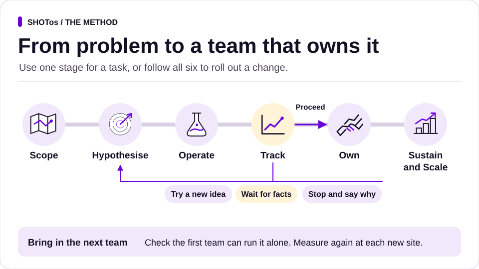

Open source · MIT and CC BY 4.0
Free AI workflows, from the first brief to a result someone can own.
SHOTos is a set of skills, templates and rules for the AI assistant you already use. Use it to turn customer notes into a test plan, write a proposal, build a campaign preview or hand work to the next person. Start from your context, agree what good looks like, then check what comes back.
Install
The installer needs Python 3.9 or later. Clone SHOTos next to the project where you want to use it, then run the installer from your project folder. Preview first with --dry-run.
git clone https://github.com/SHOTClubhouse/shotos.gitpython ../shotos/install.py --runtime claude --scope project --dry-run
python ../shotos/install.py --runtime claude --scope projectUse --runtime agents for Codex and other agents, and add --pack <name> for each pack you want. The installer always includes the core skills. No terminal? Use the skills in ChatGPT or Claude by downloading the ZIPs from the latest release.
The four rules inside every stage
- Stop at the boundaries. Get authority for actions that send, spend, publish, deploy or affect others.
- Agree acceptance first. Name the owner, expected result and checks.
- Read back the real result. Open the output, run the check or inspect the relevant system.
- Claim only what you can show. Link the evidence and label what still needs verification.

Guides
Start by role
- Start with the work you doPick the job in front of you and the first skill to try.
- Start here: a small business ownerTake some admin off a small team without anything going to a customer unchecked.
- Start here: a startup founderTurn one open question into a problem brief and a small test.
- Start here: a COO or operations leader in a large organisationReview one decision or recurring task with its owner, using fictional records first.
- Review one AI-assisted workflowShow a risk owner what a workflow can do, what may go wrong and who can stop it.
Set up
- Use SHOTos in ChatGPT or Claude without a terminalUse the skills in ChatGPT or Claude without a terminal.
- Use SHOTos in Codex or Claude CodeInstall the skills into a Codex or Claude Code project on Windows or Mac.
Practise
- Practise an enterprise invoice-query pilotA 20-minute fictional handoff between an operator, a reviewer and a sponsor.
- Run a partner pilotRun a pilot between two organisations with one record of decisions and owners.
Worked example
Northbank Community Football is a fictional three-page club site and open-day campaign, taken from brief to a checked release with SHOTos. All club details are invented.
Licence
Code, including tools/, hooks/ and install.py, is under the MIT licence. Documentation, skills, templates and examples are under CC BY 4.0: share and adapt them for any purpose, with the credit set out in that file. The SHOT name and logo are not covered by either licence.